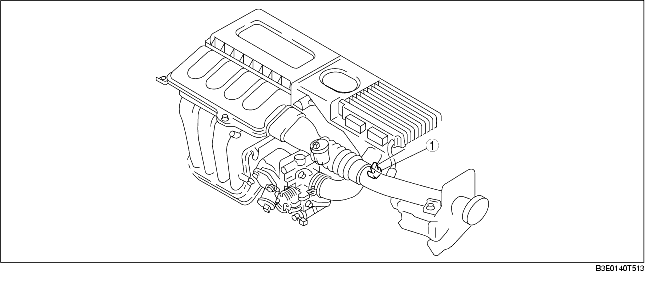
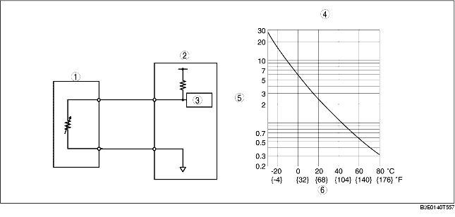

• Installed on the air hose.

.
• Built into the MAF sensor.
.
• A thermistor type is used and the resistance changes according to the IAT.
• As shown in the characteristics graph, when the IAT is high, the resistance is low, and when the IAT is low, the resistance is high.

.